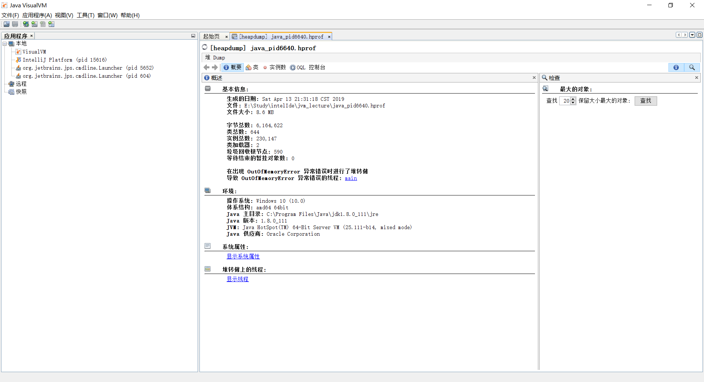
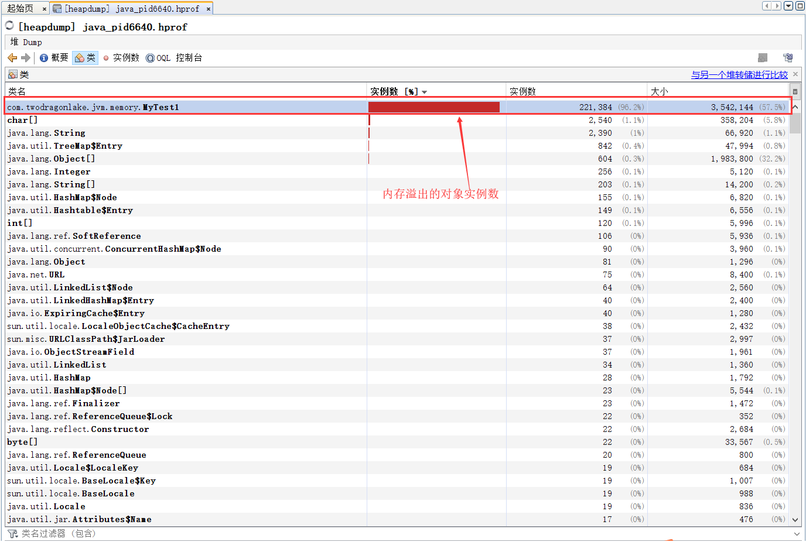
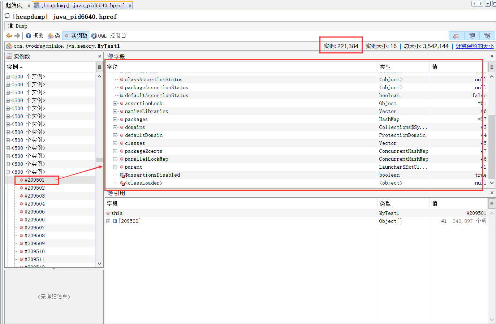
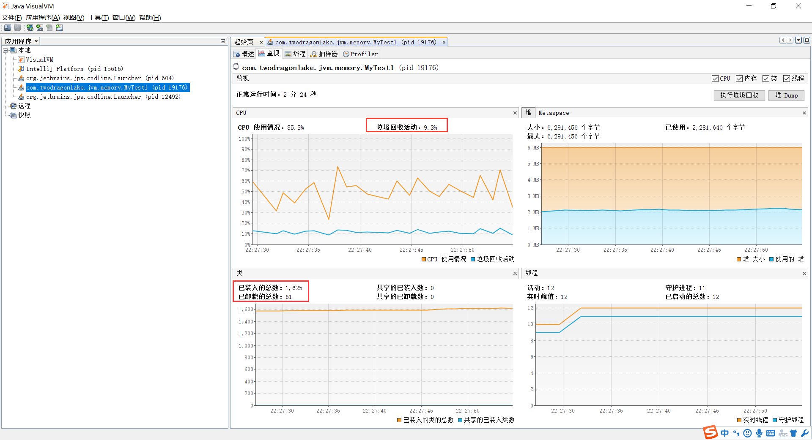

关于java对象创建的过程：
new 关键字创建对象的三个步骤：
- 在堆内存中创建出对象的实例。
- 为对象的实例成员变量赋初值。
- 将对象的引用返回。
指针碰撞
在堆里边，内存分为2部分，一部分是被占用的，另一部分是未占用的，他们各自都是连续的，我们在未被占用的区域创建对象后，指针就会向下移动，
这就是指针碰撞(前提是堆空间通过一个指针进行分割，一侧是已经被占用的空间，另一侧是未被占用的空间)
空闲列表
堆内存里边的空间不是连续的，占用和未被占用的空间都掺杂在一起，这个时候虚拟机会维护一个空闲区域的列表，记录空闲区域的地址以及他的容量，以及那些空间是已经使用的，
然后给对象分配内存的时候会从维护的列表里边找一个能容纳对象的一个区域把对象放进去，这就是空闲链表(前提是堆内存空间中已被使用与未被使用的空间交叉在一起的，这是，虚拟机
就需要通过一个列表记录那些空间是可以使用的，那些空间是已经被使用的，接下来找出可以容纳下新创建对象的且未被使用的空间，在此空间存放该对象，同时还要
修改该列表上的记录)
对象在内存中的布局：
1 . 对象头
- 实例数据(即我们在一个类中所声明的各项信息)
- 对齐填充(可选)
引用访问对象的方式：
- 使用句柄的方式。
- 使用直接指针的方式。
实战：
设置-Xms5m -Xmx5m -XX:+HeapDumpOnOutOfMemoryError然后run。
1 | public class MyTest1 { |
输出：
1 | java.lang.OutOfMemoryError: GC overhead limit exceeded |
OutOfMemoryError的继承体系：
public class OutOfMemoryError extends VirtualMachineError
abstract public class VirtualMachineError extends Error
可以看到OutOfMemoryError是一个错误，出现这种问题都是大问题，虚拟机直接就挂掉了。
jvisualvm
打开之后选择：文件–》装入，选择刚才dump出来的文件。

可以看到内存溢出的对象数很多：


我们在修改下程序：
1 | for(;;){ |
这个时候我们运行程序的时候就不会出现oom的错误。
此时我们打开jvisualvm可以看到动态的数据：

程序的堆平稳在2M的层次上。
好，现在我们修改下jvm的启动参数为： -Xms1m -Xmx1m -XX:+HeapDumpOnOutOfMemoryError 运行，
然后我们的程序出现了内存溢出，缩小为1M，这个时候在观察jvisualvm。意味着回收的速度赶不上创建的速度。
System.gc();
Runs the garbage collector.
Calling the gc method suggests that the Java Virtual Machine expend effort toward recycling unused objects in order to make the memory they currently occupy available for quick reuse.
When control returns from the method call, the Java Virtual Machine has made a best effort to reclaim space from all discarded objects.
The call System.gc() is effectively equivalent to the call:
Runtime.getRuntime().gc()
调用垃圾收集器。
调用垃圾收集器建议虚拟机花费一些努力来对不用的对象进行回收，为了使占用的空间得到再次利用，当gc调用返回的时候，java虚拟机将会最尽最大努力去回收不用的对象。
实际开发中不鼓励使用这个方法，虚拟机会自动调用，在合适的时机。